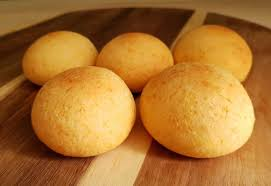

Nuestras Recetas
Arepas de maíz pelado
Una receta clásica de la región andina con el sabor auténtico de casa.
Ver recetaAlmojabana
Pan tradicional de queso que derrite corazones con su suavidad y sabor único.
Ver recetaUna receta clásica de la región andina con el sabor auténtico de casa.
Ver recetaPan tradicional de queso que derrite corazones con su suavidad y sabor único.
Ver receta